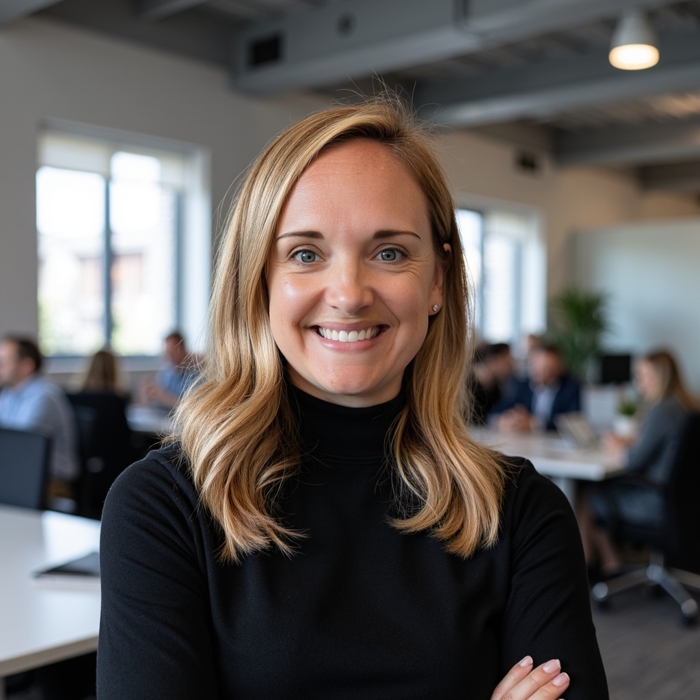

I've lived the chaos of businesses scaling from 50 to 150+ people, when the systems that used to work suddenly do not. I help leadership teams rebuild what sits underneath strategy so goals become day-to-day execution.
With 15+ years as a strategic operator at Vistaprint, TripAdvisor, Chegg, and Hummingbird Healthcare, I have seen that execution problems look remarkably similar across industries. The solutions are usually structural, not cosmetic.
My perspective is simple: you cannot sew AI onto a broken process and expect anything but broken AI. Build a resilient operating foundation first, then embed AI where work actually happens.
- Deep Systems Thinking: I do not patch the thing that broke. I identify why it keeps breaking.
- Outcome-Obsessed: I focus on systems your team actually uses, not shelfware deliverables.
- Iterative Execution: I treat your organization like a product by shipping, testing, and refining.
- Embedded Partnership: I work inside leadership workflows, not from the outside looking in.